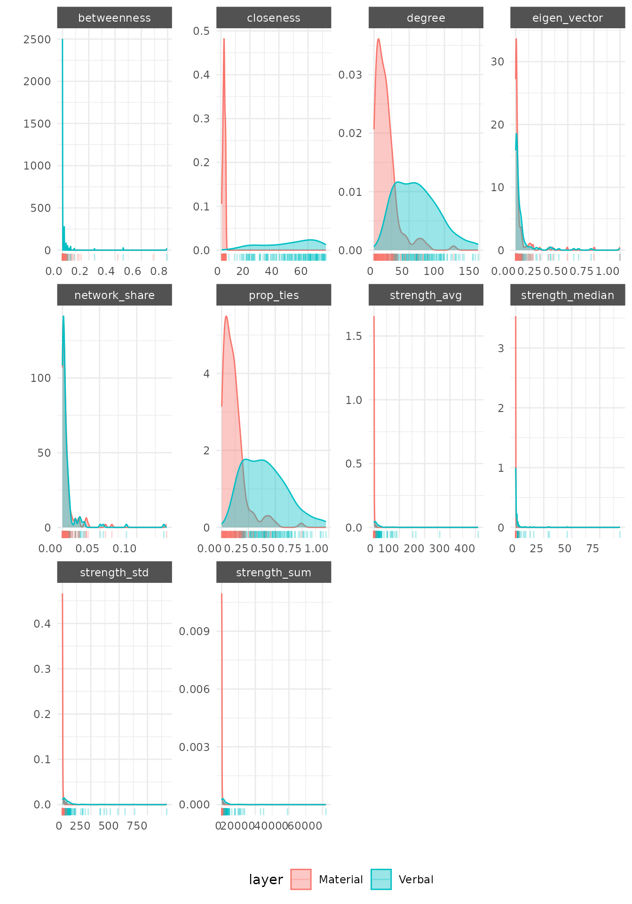

Measuring Who Connects with Whom: Homophily & Dyadic Analysis
Cassy Dorff and Shahryar Minhas
2025-06-25
Source:vignettes/attribute_analysis.Rmd
attribute_analysis.RmdVignette Summary
This vignette demonstrates how to play with netify to explore relationships between international alliance patterns and country characteristics using data from the Correlates of War (COW) project and Alliance Treaty Obligations and Provisions (ATOP) data. We’ll toy around with some simple international relations ideas:
- Democratic Peace: Do democracies cooperate more with each other than with non-democracies?
- Economic Interdependence: Do countries with similar economic development levels cooperate more?
- Geographic Proximity: Does geographic distance affect cooperation patterns?
- Regional Clustering: Do countries primarily cooperate within their own regions?
We’ll focus on how to do some exploratory statistical analysis with netify:
-
homophily(): Do Birds of a Feather Flock Together?- Tests whether similar countries tend to form alliances with each other. For example, do democracies primarily ally with other democracies? Do rich countries mainly partner with other rich countries?
- Calculates correlations between attribute similarity and network tie presence using multiple similarity metrics. Performs permutation-based significance testing to determine if observed homophily patterns exceed random chance.
- Function notes:
- Flexible similarity metrics: Correlation, euclidean, categorical, cosine and other methods
- Statistical rigor: Permutation tests with confidence intervals
- Smart missing data handling: Preserves maximum sample sizes
- Multi-network ready: Works across time periods and layers
-
mixing_matrix(): Who Actually Partners With Whom?- Creates detailed “who allies with whom” tables. Shows not just that democracies prefer democracies, but exactly how much they interact with autocracies, hybrid regimes, etc. Think of it as a cross-tabulation on steroids.
- Constructs mixing matrices showing tie distributions across attribute combinations. Calculates assortativity coefficients, modularity scores, and entropy measures to quantify mixing patterns with optional normalization schemes.
- Function notes:
- Cross-dimensional analysis: How regime types mix across regions (unique feature!)
-
Rich summary statistics: Assortativity, modularity,
entropy, diagonal proportions
- Flexible normalization: Raw counts, proportions, or row-normalized
- Weighted network support: Incorporates alliance strength, not just presence
-
dyad_correlation(): What Relationship Factors Drive Alliances?- Tests how characteristics of country pairs (like geographic distance, trade volume, or cultural similarity) predict whether they’ll form alliances. Answers questions like “Do nearby countries ally more often?”
- Correlates dyadic (pairwise) variables with network ties using multiple correlation methods. Supports partial correlation analysis to control for confounding dyadic factors while handling missing data through pairwise deletion.
- Function notes:
- Partial correlation support: Isolate specific effects while controlling for others
- Multiple correlation methods: Pearson, Spearman, Kendall with significance testing
- Binary network options: Analyze tie presence vs. strength separately
- Comprehensive diagnostics: Descriptive stats for all variables
-
attribute_report(): The Complete Picture in One Function- A kind of swiss army knife for understanding how country characteristics relate to alliance patterns. Automates running relevant analyses and tells you what makes countries influential, who allies with whom, and what drives partnership formation.
- Comprehensive wrapper combining homophily analysis, mixing matrices, dyadic correlations, and centrality-attribute relationships. Tries to automatically determine appropriate methods based on variable types.
Data Preparation
We’ll use the Correlates of War data via the
peacesciencer package to build a network of international
alliances. This data includes measures of democracy, economic
development, military capabilities, geographic relationships between
countries, and alliance commitments from the ATOP dataset.
COW data
# Download peacesciencer external data if needed
peacesciencer::download_extdata()
# Create dyadic dataset for a recent 5-year period
cow_dyads <- create_dyadyears(subset_years = c(2010:2014)) |>
# Add conflict data (we'll use inverse for cooperation)
add_cow_mids() |>
# Add capital distance
add_capital_distance() |>
# Add democracy scores (V-Dem polyarchy)
add_democracy() |>
# Add GDP data
add_sdp_gdp() |>
# Add material capabilities
add_nmc() |>
# Add ATOP alliance data
add_atop_alliance()
# Create alliance cooperation measure based on ATOP alliance types
cow_dyads <- cow_dyads |>
mutate(
# Create alliance intensity score (0-5 based on number of pledge types)
alliance_score = atop_defense + atop_offense + atop_neutral + atop_nonagg + atop_consul,
# Normalize to 0-1 scale
alliance_norm = alliance_score / 5,
# Create cooperation score: alliance intensity without conflict
cooperation = alliance_norm,
# cooperation = alliance_norm * (1 - cowmidonset),
# Add region information
region1 = countrycode(ccode1, "cown", "region"),
region2 = countrycode(ccode2, "cown", "region"),
# Log transform some variables
log_gdp1 = log(wbgdp2011est1 + 1),
log_gdp2 = log(wbgdp2011est2 + 1),
log_capdist = log(capdist + 1)
)
# Filter to 2012 for cross-sectional analysis
cow_2012 <- cow_dyads |>
filter(year == 2012)
# Create alliance network
alliance_net <- netify(
cow_2012,
actor1 = 'ccode1', actor2 = 'ccode2',
symmetric = TRUE,
weight = 'cooperation'
)
# Print object
print(alliance_net)
# Prepare nodal data with country attributes
nodal_data <- cow_2012 |>
select(
ccode1, region1, v2x_polyarchy1,
log_gdp1, cinc1
) |>
distinct() |>
rename(
actor = ccode1,
region = region1,
democracy = v2x_polyarchy1,
log_gdp = log_gdp1,
mil_capability = cinc1
) |>
mutate(
# Create democracy categories based on V-Dem scores
regime_type = case_when(
democracy >= 0.6 ~ "Democracy",
democracy >= 0.4 ~ "Hybrid",
democracy < 0.4 ~ "Autocracy",
TRUE ~ "Unknown"
),
# Create development categories
development = case_when(
log_gdp >= quantile(log_gdp, 0.75, na.rm = TRUE) ~ "High",
log_gdp >= quantile(log_gdp, 0.25, na.rm = TRUE) ~ "Medium",
TRUE ~ "Low"
)
)
# Add country names for better interpretation
nodal_data$country_name <- countrycode(nodal_data$actor, "cown", "country.name")
# Add nodl variables to network
alliance_net <- add_node_vars(alliance_net, nodal_data, actor = "actor")Add dyadic (relationship-level) variables:
# Prepare dyadic data
dyad_data <- cow_2012 |>
select(ccode1, ccode2, log_capdist, alliance_norm, atop_defense) |>
rename(
actor1 = ccode1,
actor2 = ccode2,
geographic_distance = log_capdist,
alliance_intensity = alliance_norm,
defense_alliance = atop_defense
)
# Add dyadic variables to network
alliance_net <- add_dyad_vars(
alliance_net,
dyad_data = dyad_data,
actor1 = "actor1",
actor2 = "actor2",
dyad_vars = c("geographic_distance", "alliance_intensity", "defense_alliance"),
dyad_vars_symmetric = c(TRUE, TRUE, TRUE)
)1. Testing the Democratic Peace with homophily()
The democratic peace theory posits that democracies rarely engage in conflict with one another, driven by shared liberal norms, institutional constraints on executive power, and transparency in political decision-making. Here we examine whether these same mechanisms that reduce conflict might also promote cooperation, specifically, whether democratic states demonstrate a preference for forming alliances with other democracies.
Here are the edited sections with interpretive output similar to the regional clustering example:
üîç Using homophily() for Continuous Variables
The homophily() function is a tool in
netify that tests whether similar actors tend to
connect more in a network. It can handle both continuous and categorical
attributes.
# Test if countries with similar democracy levels form more alliances
democracy_homophily <- homophily(
alliance_net, # Our network object
attribute = "democracy", # Node attribute to analyze
method = "correlation", # Method for continuous variables
significance_test = TRUE # Perform statistical significance test
)
print(democracy_homophily)## net layer attribute method threshold_value homophily_correlation
## 1 1 cooperation democracy correlation 0 0.1402454
## mean_similarity_connected mean_similarity_unconnected similarity_difference
## 1 -0.2431161 -0.3122502 0.06913408
## p_value ci_lower ci_upper n_connected_pairs n_unconnected_pairs
## 1 0 0.1246703 0.1546069 3558 11493
cat("\nDemocracy Homophily Results:\n")##
## Democracy Homophily Results:## - Homophily correlation: 0.14
cat("- Avg similarity among allies:", round(democracy_homophily$mean_similarity_connected, 3), "\n")## - Avg similarity among allies: -0.243
cat("- Avg similarity among non-allies:", round(democracy_homophily$mean_similarity_unconnected, 3), "\n")## - Avg similarity among non-allies: -0.312## - P-value: 0
if(democracy_homophily$p_value < 0.05) {
cat("→ Democracies significantly tend to ally with similarly democratic countries\n")
} else {
cat("→ No significant democracy-based alliance preferences detected\n")
}## → Democracies significantly tend to ally with similarly democratic countriesUnderstanding the Output:
- homophily_correlation: Measures tendency for similar values to connect (0 to 1)
- mean_similarity_connected: Average similarity among connected pairs
- mean_similarity_unconnected: Average similarity among unconnected pairs
- p_value: Statistical significance of the homophily pattern
The democracy homophily analysis reveals a statistically significant pattern of democratic countries preferring to form alliances with other democracies. With a homophily correlation of 0.14 (p < 0.05), there is evidence that similarity in democratic values influences alliance formation. The negative similarity values (-0.243 for allies vs -0.312 for non-allies) reflect the correlation method’s use of negative absolute differences, where less negative values indicate greater similarity. This 0.069 difference between allied and non-allied pairs demonstrates that countries in alliances tend to have more similar democracy scores than those without alliance ties. The finding extends democratic peace theory beyond conflict avoidance—democracies not only rarely fight each other but also show a moderate tendency to select each other as alliance partners. This pattern across 3,558 alliance pairs likely reflects shared preferences for international institutions, compatible domestic constraints on foreign policy, and the reduced uncertainty that comes from transparency in democratic decision-making processes.
Visualizing Homophily Patterns
We can visualize the homophily pattern to better understand how democracy similarity relates to alliance formation:
# Visualize the democracy homophily pattern
plot_homophily(democracy_homophily, alliance_net,
type = "distribution",
attribute = "democracy",
method = "correlation",
sample_size = 5000) + # Sample for faster plotting with large networks
labs(subtitle = "Allied countries show greater similarity in democracy scores")The distribution plot shows the density of similarity scores for connected (allied) versus unconnected (non-allied) country pairs. The vertical dashed lines indicate the mean similarity for each group. The visualization illustrates the moderate democracy homophily effect (r = 0.14). While both distributions substantially overlap, the allied pairs (blue) show a subtle but significant rightward shift compared to non-allied pairs (gold). The mean similarity for allied countries (-0.243) exceeds that of non-allied countries (-0.312), indicating that democracies do tend to ally with similar regimes.
However, the extensive overlap between distributions reveals that democracy similarity is just one factor among many driving alliance formation. Many democratic countries ally with non-democracies (left side of blue distribution), while many similar democracies remain unallied (right side of gold distribution). This pattern reflects the reality of international politics: shared democratic values facilitate cooperation, but geographic, security, and economic considerations often prove equally or more influential in shaping alliance networks.
üîç Using homophily() for Categorical Variables
Now lets move onto the categorical regime type variable we made:
## actor region democracy log_gdp mil_capability regime_type
## 1 100 Latin America & Caribbean 0.627 3.337583 6.695519e-03 Democracy
## 2 101 Latin America & Caribbean 0.414 3.332919 4.859170e-03 Hybrid
## 3 110 Latin America & Caribbean 0.590 3.148239 3.355918e-05 Hybrid
## 4 115 Latin America & Caribbean 0.772 3.169770 4.996089e-05 Democracy
## 5 130 Latin America & Caribbean 0.582 3.290452 1.530854e-03 Hybrid
## 6 135 Latin America & Caribbean 0.775 3.315930 3.378733e-03 Democracy
## development country_name
## 1 High Colombia
## 2 High Venezuela
## 3 Low Guyana
## 4 Low Suriname
## 5 Medium Ecuador
## 6 High Peru
# Test using categorical regime types
regime_homophily <- homophily(
alliance_net,
attribute = "regime_type",
method = "categorical",
significance_test = TRUE)
print(regime_homophily)## net layer attribute method threshold_value homophily_correlation
## 1 1 cooperation regime_type categorical 0 0.1331376
## mean_similarity_connected mean_similarity_unconnected similarity_difference
## 1 0.4098686 0.26186 0.1480086
## p_value ci_lower ci_upper n_connected_pairs n_unconnected_pairs
## 1 0 0.119174 0.1471056 4033 14882
cat("\nRegime Type Homophily Results:\n")##
## Regime Type Homophily Results:## - Homophily score: 0.133## - Same-regime alliances: 0.41## - Cross-regime alliances: 0.262## - P-value: 0
if(regime_homophily$p_value < 0.05 && regime_homophily$homophily_correlation > 0.1) {
cat("→ Countries strongly prefer allies with similar political systems\n")
} else {
cat("→ Regime type doesn't significantly influence alliance formation\n")
}## → Countries strongly prefer allies with similar political systemsThe regime type analysis also reveals a pattern of political homophily in alliance formation. With a homophily score of 0.133 (p < 0.001), countries demonstrate a clear preference for forming alliances with similar regime types. The similarity scores, 41% for allied pairs versus 26.2% for non-allied pairs, indicate that countries sharing the same regime type (Democracy, Hybrid, or Autocracy) are substantially more likely to form alliances. This 14.8 percentage point difference suggests that political regime compatibility plays at least some role in international cooperation.
The categorical nature of this analysis provides a clearer interpretation than continuous measures: when countries form alliances, there’s a 41% chance their partner shares the same regime type, compared to only 26.2% for non-allied pairs. This pattern supports the idea that shared political institutions and governance norms facilitate international cooperation, though the effect remains moderate enough to allow for substantial cross-regime alliances driven by strategic necessities – though note that we are not specifically testing the democratic peace idea here specifically as we are amalgmating autocracy-autocracy and democracy-democracy pairs into our same-regime bucket.
Visualizing Categorical Homophily
For categorical variables like regime type, the visualization looks different. Instead of continuous similarity distributions, we see discrete categories:
# Visualize regime type homophily
plot_homophily(regime_homophily, alliance_net,
type = "distribution",
attribute = "regime_type",
method = "categorical",
sample_size = 5000) +
labs(title = "Regime Type Homophily in Alliance Networks",
subtitle = "Do similar political systems form more alliances?")
Unlike the continuous democracy score, regime type similarity is binary: country pairs either share the same regime type (similarity = 1) or they don’t (similarity = 0). The visualization shows two bars comparing the proportion of alliances within each category. A higher blue bar at similarity = 1 indicates that countries with the same regime type are more likely to form alliances than those with different regime types. This categorical approach provides a clearer test of the “democracies ally with democracies” hypothesis, though it loses the nuance of how similar countries are on the democracy spectrum.
2. Economic Interdependence and Development
International relations theory suggests that countries with similar levels of economic development tend to form more alliances. Let’s test this hypothesis:
# Test if countries with similar GDP levels form more alliances
gdp_homophily <- homophily(
alliance_net,
attribute = "log_gdp",
method = "correlation",
significance_test = TRUE)
print(gdp_homophily)## net layer attribute method threshold_value homophily_correlation
## 1 1 cooperation log_gdp correlation 0 0.1104911
## mean_similarity_connected mean_similarity_unconnected similarity_difference
## 1 -0.08536979 -0.1056113 0.02024147
## p_value ci_lower ci_upper n_connected_pairs n_unconnected_pairs
## 1 0 0.09785752 0.1237175 3902 13864
cat("\nEconomic Development Homophily Results:\n")##
## Economic Development Homophily Results:## - Homophily correlation: 0.11## - Similarity among allies: -0.085## - Similarity among non-allies: -0.106## - P-value: 0
if(gdp_homophily$p_value < 0.05 && gdp_homophily$homophily_correlation > 0) {
cat("→ Countries at similar development levels are more likely to form alliances\n")
} else {
cat("→ Economic development levels don't significantly predict alliance patterns\n")
}## → Countries at similar development levels are more likely to form alliances3. Regional Clustering in International Cooperation
Do countries primarily form alliances within their own regions, or are alliances more globally distributed? Regional patterns provide another example of categorical homophily:
# Test regional homophily
region_homophily <- homophily(
alliance_net,
attribute = "region",
method = "categorical",
significance_test = TRUE)
print(region_homophily)## net layer attribute method threshold_value homophily_correlation
## 1 1 cooperation region categorical 0 0.7848225
## mean_similarity_connected mean_similarity_unconnected similarity_difference
## 1 0.7956856 0.03420239 0.7614832
## p_value ci_lower ci_upper n_connected_pairs n_unconnected_pairs
## 1 0 0.7741058 0.7962057 4033 14882
cat("\nRegional Clustering Results:\n")##
## Regional Clustering Results:## - Homophily score: 0.785## - Within-region alliances: 0.796## - Cross-region alliances: 0.0344. Who Forms Alliances With Whom? Using
mixing_matrix()
The mixing_matrix() function reveals detailed
interaction patterns between different types of actors in your network.
This is crucial for understanding not just if certain types
connect, but how much and with whom.
üìä Democracy Mixing Matrix
# Analyze mixing patterns by regime type
regime_mixing <- mixing_matrix(
alliance_net, # Network object
attribute = "regime_type", # Categorical attribute to analyze
normalized = TRUE # Normalize to show proportions
)
# Display the mixing matrix
cat("Regime Type Alliance Matrix:\n")## Regime Type Alliance Matrix:## Autocracy Democracy Hybrid Unknown
## Autocracy 0.128 0.100 0.061 0.006
## Democracy 0.100 0.241 0.079 0.038
## Hybrid 0.061 0.079 0.033 0.010
## Unknown 0.006 0.038 0.010 0.008
# Interpret key statistics
cat("\nKey Insights from mixing_matrix():\n")##
## Key Insights from mixing_matrix():## - Assortativity: 0.113
cat(" (Positive = similar types connect more; Negative = different types connect more)\n")## (Positive = similar types connect more; Negative = different types connect more)
cat("- Proportion of within-type alliances:", round(regime_mixing$summary_stats$diagonal_proportion, 3), "\n")## - Proportion of within-type alliances: 0.41
cat(" (Higher values indicate more homophily)\n")## (Higher values indicate more homophily)üåç Regional Alliance Patterns with Row Normalization
# Analyze mixing patterns by region
region_mixing <- mixing_matrix(
alliance_net,
attribute = "region",
normalized = TRUE,
by_row = TRUE)
cat("Regional Alliance Matrix (row-normalized):\n")## Regional Alliance Matrix (row-normalized):## East Asia & Pacific Europe & Central Asia
## East Asia & Pacific 0.554 0.215
## Europe & Central Asia 0.045 0.885
## Latin America & Caribbean 0.019 0.012
## Middle East & North Africa 0.005 0.106
## North America 0.208 0.542
## South Asia 0.645 0.149
## Sub-Saharan Africa 0.002 0.005
## Latin America & Caribbean Middle East & North Africa
## East Asia & Pacific 0.032 0.005
## Europe & Central Asia 0.004 0.021
## Latin America & Caribbean 0.931 0.000
## Middle East & North Africa 0.000 0.415
## North America 0.172 0.016
## South Asia 0.033 0.000
## Sub-Saharan Africa 0.001 0.114
## North America South Asia Sub-Saharan Africa
## East Asia & Pacific 0.064 0.124 0.006
## Europe & Central Asia 0.035 0.006 0.004
## Latin America & Caribbean 0.031 0.004 0.003
## Middle East & North Africa 0.005 0.000 0.469
## North America 0.010 0.047 0.005
## South Asia 0.074 0.099 0.000
## Sub-Saharan Africa 0.000 0.000 0.878Visualizing Regional Alliance Patterns
# Visualize regional mixing patterns
plot_mixing_matrix(region_mixing,
show_values = TRUE,
value_digits = 2,
text_size = 3,
diagonal_emphasis = TRUE,
reorder_categories = FALSE) +
labs(title = "Regional Alliance Patterns",
subtitle = "Within-region vs cross-region alliance formation",
x = "Allied with region",
y = "From region") +
theme(axis.text.x = element_text(angle = 45, hjust = 1, size = 10),
axis.text.y = element_text(size = 10))
The regional mixing matrix reveals strong regional clustering in alliance formation. The emphasized diagonal shows that most regions primarily form alliances within their own geographic area, with some notable exceptions for cross-regional partnerships driven by strategic interests.
üîÄ Cross-Dimensional Analysis: Region √ó Regime Type
A unique feature of mixing_matrix() is analyzing
interactions across different attributes:
# How do regime types interact across regions?
cross_mixing <- mixing_matrix(
alliance_net,
attribute = "regime_type",
row_attribute = "region",
normalized = TRUE)
cat("How different regime types form alliances across regions:\n")## How different regime types form alliances across regions:## Autocracy Democracy Hybrid Unknown
## East Asia & Pacific 0.020 0.035 0.020 0.003
## Europe & Central Asia 0.057 0.240 0.049 0.026
## Latin America & Caribbean 0.006 0.071 0.024 0.031
## Middle East & North Africa 0.043 0.017 0.014 0.000
## North America 0.004 0.013 0.004 0.002
## South Asia 0.004 0.006 0.004 0.000
## Sub-Saharan Africa 0.160 0.076 0.069 0.0005. Analyzing Relationship-Level Factors with
dyad_correlation()
The dyad_correlation() function examines how
relationship-level (dyadic) variables correlate with network ties. This
is essential for understanding what factors at the relationship level
predict connections.
üåç Geographic Distance and Alliance Formation
# Test correlation between geographic distance and alliance formation
geo_correlation <- dyad_correlation(
alliance_net, # Network object
dyad_vars = "geographic_distance", # Dyadic variable to analyze
method = "pearson", # Correlation method
significance_test = TRUE # Test statistical significance
)
# Display results
cat("Geographic Distance and Alliance Formation (dyad_correlation results):\n")## Geographic Distance and Alliance Formation (dyad_correlation results):## - Correlation coefficient: -0.588## - P-value: 0
cat("- Number of dyads analyzed:", geo_correlation$n_dyads, "\n\n")## - Number of dyads analyzed:
# Interpret the correlation
if(geo_correlation$correlation < -0.1 && geo_correlation$p_value < 0.05) {
cat("✓ Geography matters: Countries form more alliances with nearby nations.\n")
cat(" (Negative correlation = shorter distance, more alliances)\n")
} else if(geo_correlation$correlation > 0.1 && geo_correlation$p_value < 0.05) {
cat("✗ Surprising: Greater distance associated with more alliances.\n")
cat(" (Positive correlation = greater distance, more alliances)\n")
} else {
cat("→ Geography shows no clear effect on alliance patterns.\n")
cat(" (No significant correlation detected)\n")
}## ✓ Geography matters: Countries form more alliances with nearby nations.
## (Negative correlation = shorter distance, more alliances)ü§ù Analyzing Multiple Dyadic Variables
# Test both geographic distance and alliance intensity
multi_dyad_correlation <- dyad_correlation(
alliance_net,
dyad_vars = c("geographic_distance", "alliance_intensity", "defense_alliance"),
method = "pearson",
significance_test = TRUE
)
cat("\nMultiple Dyadic Variables Analysis:\n")##
## Multiple Dyadic Variables Analysis:
for(i in 1:nrow(multi_dyad_correlation)) {
cat("\n", multi_dyad_correlation$dyad_var[i], ":\n", sep="")
cat(" Correlation:", round(multi_dyad_correlation$correlation[i], 3), "\n")
cat(" P-value:", round(multi_dyad_correlation$p_value[i], 3), "\n")
}##
## geographic_distance:
## Correlation: -0.588
## P-value: 0
##
## alliance_intensity:
## Correlation: 1
## P-value: 0
##
## defense_alliance:
## Correlation: 0.892
## P-value: 06. Comprehensive Analysis with attribute_report()
The attribute_report() tries to combines the previous
analyses into a comprehensive report.
üöÄ Running the Complete Analysis
# Run comprehensive analysis with all features
comprehensive_analysis <- attribute_report(
alliance_net,
# Node-level variables to analyze
node_vars = c("region", "regime_type", "democracy", "log_gdp", "mil_capability"),
# Dyad-level variables to analyze
dyad_vars = c("geographic_distance", "alliance_intensity", "defense_alliance"),
# Include all analysis types
include_centrality = TRUE, # Correlate attributes with network position
include_homophily = TRUE, # Test if similar nodes connect
include_mixing = TRUE, # Examine interaction patterns
include_dyadic_correlations = TRUE, # Analyze dyadic predictors
# Specify which centrality measures to compute
centrality_measures = c("degree", "betweenness", "closeness"),
# Perform significance tests
significance_test = TRUE
)
# The function returns a list with multiple components
cat("Components of attribute_report output:\n")## Components of attribute_report output:
cat("- homophily_analysis: Tests for each node attribute\n")## - homophily_analysis: Tests for each node attribute
cat("- mixing_matrices: Interaction patterns for categorical variables\n")## - mixing_matrices: Interaction patterns for categorical variables
cat("- centrality_correlations: How attributes relate to network position\n")## - centrality_correlations: How attributes relate to network position
cat("- dyadic_correlations: How dyad attributes predict ties\n")## - dyadic_correlations: How dyad attributes predict tiesüìã Extracting Key Findings from the Summary
# Extract and display homophily results
cat("=== HOMOPHILY ANALYSIS ===\n")## === HOMOPHILY ANALYSIS ===
cat("Do similar countries form more alliances?\n\n")## Do similar countries form more alliances?
homophily_summary <- comprehensive_analysis$homophily_analysis
# Create a more informative display
homophily_display <- homophily_summary |>
mutate(
significance = case_when(
p_value < 0.001 ~ "***",
p_value < 0.01 ~ "**",
p_value < 0.05 ~ "*",
TRUE ~ "n.s."
),
interpretation = case_when(
homophily_correlation > 0.3 & p_value < 0.05 ~ "Strong homophily",
homophily_correlation > 0.1 & p_value < 0.05 ~ "Moderate homophily",
homophily_correlation > 0 & p_value < 0.05 ~ "Weak homophily",
p_value >= 0.05 ~ "No significant pattern",
TRUE ~ "Heterophily"
)
)
print(homophily_display[, c("attribute", "method", "homophily_correlation", "p_value", "significance", "interpretation")])## attribute method homophily_correlation p_value
## region region categorical 0.78482253 0
## regime_type regime_type categorical 0.13313762 0
## democracy democracy correlation 0.14024544 0
## log_gdp log_gdp correlation 0.11049114 0
## mil_capability mil_capability correlation -0.04493153 0
## significance interpretation
## region *** Strong homophily
## regime_type *** Moderate homophily
## democracy *** Moderate homophily
## log_gdp *** Moderate homophily
## mil_capability *** Heterophily
# Which attributes correlate with network centrality?
cat("\n=== POWER AND INFLUENCE ===\n")##
## === POWER AND INFLUENCE ===
cat("What makes countries central in the alliance network?\n\n")## What makes countries central in the alliance network?
centrality_summary <- comprehensive_analysis$centrality_correlations
# Show all centrality correlations with interpretation
centrality_display <- centrality_summary |>
mutate(
interpretation = case_when(
correlation > 0.3 & p_value < 0.05 ~ "Strongly associated with centrality",
correlation > 0.1 & p_value < 0.05 ~ "Moderately associated with centrality",
correlation < -0.1 & p_value < 0.05 ~ "Negatively associated with centrality",
p_value < 0.05 ~ "Weakly associated with centrality",
TRUE ~ "Not significantly related to centrality"
)
) |>
arrange(p_value)
print(centrality_display[1:10, c("node_var", "centrality_measure", "correlation", "p_value", "interpretation")])## node_var centrality_measure correlation p_value
## cor7 mil_capability betweenness 0.68113948 6.181020e-28
## cor8 mil_capability closeness 0.35058816 9.306697e-07
## cor5 log_gdp closeness 0.35364744 1.116416e-06
## cor4 log_gdp betweenness 0.31071864 1.351866e-05
## cor2 democracy closeness 0.31867088 2.415079e-05
## cor3 log_gdp degree 0.24154172 8.129773e-04
## cor democracy degree 0.23350850 1.928867e-03
## cor6 mil_capability degree 0.16479419 2.132428e-02
## cor1 democracy betweenness 0.06434629 3.989251e-01
## 1 region degree NA NA
## interpretation
## cor7 Strongly associated with centrality
## cor8 Strongly associated with centrality
## cor5 Strongly associated with centrality
## cor4 Strongly associated with centrality
## cor2 Strongly associated with centrality
## cor3 Moderately associated with centrality
## cor Moderately associated with centrality
## cor6 Moderately associated with centrality
## cor1 Not significantly related to centrality
## 1 Not significantly related to centrality
# Dyadic factors
cat("\n=== RELATIONSHIP FACTORS ===\n")##
## === RELATIONSHIP FACTORS ===
cat("What dyadic factors predict alliance formation?\n\n")## What dyadic factors predict alliance formation?
dyadic_summary <- comprehensive_analysis$dyadic_correlations
print(dyadic_summary[, c("dyad_var", "correlation", "p_value")])## dyad_var correlation p_value
## 1 geographic_distance -0.5881550 0
## 2 alliance_intensity 1.0000000 0
## 3 defense_alliance 0.8920884 07. Testing Specific IR Hypotheses
Hypothesis 1: Democratic Peace
# Create a binary democracy indicator
nodal_data_binary <- nodal_data |>
mutate(is_democracy = ifelse(regime_type == "Democracy", 1, 0))
alliance_net_binary <- add_node_vars(
alliance_net,
nodal_data_binary[, c("actor", "is_democracy")],
actor = "actor")
# Test democratic peace using binary measure
dem_peace_test <- homophily(
alliance_net_binary,
attribute = "is_democracy",
method = "categorical",
significance_test = TRUE)
cat("Democratic Peace Hypothesis Test:\n")## Democratic Peace Hypothesis Test:## - Effect size: 0.048## - P-value: 0
cat("- Conclusion:", ifelse(dem_peace_test$p_value < 0.05,
"Democracies significantly prefer forming alliances with other democracies",
"No significant democratic preference"), "\n")## - Conclusion: Democracies significantly prefer forming alliances with other democraciesHypothesis 2: Power Politics
Do powerful countries (high military capability) primarily form alliances with other powerful countries?
# Test military capability homophily
power_homophily <- homophily(
alliance_net,
attribute = "mil_capability",
method = "correlation",
significance_test = TRUE)
cat("\nPower Politics Hypothesis:\n")##
## Power Politics Hypothesis:## - Correlation: -0.045## - P-value: 0
cat("- Interpretation:", ifelse(power_homophily$p_value < 0.05 & power_homophily$homophily_correlation > 0,
"Powerful countries prefer forming alliances with other powerful countries",
"No evidence of power-based alliance preferences"), "\n")## - Interpretation: No evidence of power-based alliance preferences8. Visualizing Network Patterns
And as seen in other vignettes we can we use the
plot.netify() function to visualize the network with node
attributes and edge weights:
Network Visualization by Attributes
# First add network statistics to the netify object
alliance_net <- add_node_vars(
alliance_net,
summary_actor(alliance_net),
actor = "actor"
)
#
plot(alliance_net,
# Node aesthetics
node_color_by = "region",
node_color_label = "",
node_shape_by = "regime_type",
node_shape_label = "",
node_size_by = "degree",
node_size_label = "Degree",
node_fill = "white",
# Edge aesthetics - make edges much more subtle
edge_color = "grey50", # Darker gray for visibility
edge_linewidth = 0.5, # Slightly thicker for visible edges
edge_alpha_label='Alliance Strength (scaled)',
layout = "nicely",
seed = 6886) +
ggtitle("ATOP Network") +
theme(legend.position='right')Visualizing Homophily Results
# Create a visualization of homophily results
homophily_viz_data <- comprehensive_analysis$homophily_analysis |>
mutate(
attribute = factor(attribute, levels = attribute[order(homophily_correlation)]),
significant = p_value < 0.05
)
ggplot(homophily_viz_data, aes(x = homophily_correlation, y = attribute)) +
geom_segment(aes(x = 0, xend = homophily_correlation, y = attribute, yend = attribute),
color = "gray70", size = 1) +
geom_point(aes(color = significant), size = 4) +
geom_vline(xintercept = 0, linetype = "dashed", color = "gray50") +
scale_color_manual(values = c("FALSE" = "gray60", "TRUE" = "#2E86AB"),
labels = c("(p < 0.05)", "Not significant")) +
labs(title = "Homophily Analysis Results",
subtitle = "Do similar countries form more alliances?",
x = "Homophily Correlation",
y = "Attribute",
color = "") +
theme_minimal() +
theme(panel.grid.major.y = element_blank())Comparing Homophily Patterns with plot_homophily()
We can use the plot_homophily() function to create a
cleaner comparison visualization:
# Use plot_homophily for a comparison plot
plot_homophily(comprehensive_analysis$homophily_analysis,
type = "comparison") +
labs(title = "Alliance Formation Patterns: Which Attributes Matter?",
subtitle = "Homophily analysis reveals how similarity drives international cooperation")Visualizing Centrality Patterns
# Prepare data for centrality visualization
centrality_viz <- comprehensive_analysis$centrality_correlations |>
filter(p_value < 0.1) |> # Show marginally significant results
mutate(
significant = p_value < 0.05,
node_var = factor(node_var),
centrality_measure = factor(centrality_measure,
levels = c("degree", "betweenness", "closeness"))
)
if(nrow(centrality_viz) > 0) {
ggplot(centrality_viz, aes(x = correlation, y = node_var, color = significant)) +
geom_segment(aes(x = 0, xend = correlation, y = node_var, yend = node_var),
size = 1) +
geom_point(size = 3) +
facet_wrap(~centrality_measure, ncol = 1) +
geom_vline(xintercept = 0, linetype = "dashed", color = "gray50") +
scale_color_manual(values = c("FALSE" = "gray60", "TRUE" = "#F18F01")) +
labs(title = "What Makes Countries Central in the Alliance Network?",
subtitle = "Correlation between node attributes and centrality measures",
x = "Correlation with Centrality",
y = "Node Attribute",
color = "p < 0.05") +
theme_minimal() +
theme(panel.grid.major.y = element_blank())
} else {
cat("No significant centrality correlations to visualize.\n")
}Mixing Matrix Heatmap
We can use the plot_mixing_matrix() function to create a
cleaner visualization of the mixing patterns:
# Create a heatmap of the regime mixing matrix using plot_mixing_matrix
plot_mixing_matrix(regime_mixing,
show_values = TRUE,
diagonal_emphasis = TRUE) +
labs(title = "Regime Type Alliance Patterns",
subtitle = "How different regime types interact in the network",
x = "Allied with...",
y = "Regime type")The heatmap clearly shows the alliance patterns between different regime types. The diagonal cells (emphasized with black borders) represent within-type alliances, while off-diagonal cells show cross-type alliances. Darker blue indicates higher proportions of alliances. The assortativity coefficient of 0.126 and diagonal proportion of 0.405 confirm the moderate tendency for regime type homophily in alliance formation.
tl;dr
-
From
homophily():- Whether democracies truly form more alliances with each other
- If economic similarity drives alliance patterns
- The strength of regional clustering in alliance formation
-
From
mixing_matrix():- Detailed patterns of who forms alliances with whom
- Whether alliances cross regime type boundaries
- How different regions form alliances globally
-
From
dyad_correlation():- The role of geographic distance in shaping alliance formation
- How alliance types (defense, offense, etc.) cluster
- Which relationship factors matter most for alliances
-
From
attribute_report():- What attributes make countries central/influential
- Complete homophily patterns across all variables
- Comprehensive view of all network-attribute relationships